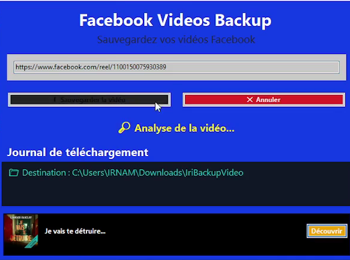
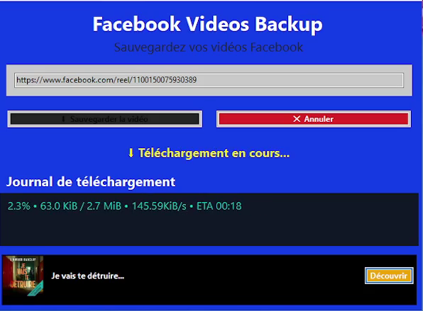
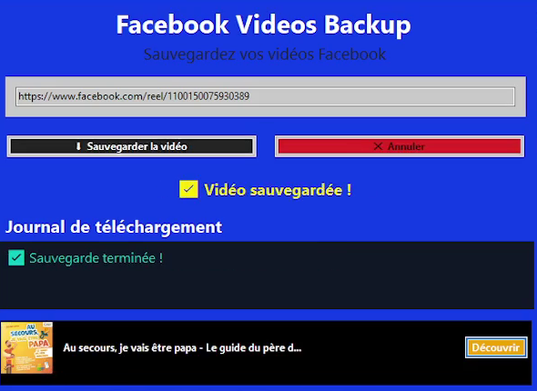

📥
Sauvegarde de vidéos
Enregistrez les vidéos Facebook accessibles depuis un lien pris en charge.
Sauvegardez vos vidéos Facebook en toute simplicité
Une application conçue pour enregistrer localement les vidéos Facebook auxquelles vous avez accès, afin de les retrouver et de les consulter plus facilement hors ligne.
Une interface pensée pour rendre la sauvegarde vidéo accessible et pratique.
Enregistrez les vidéos Facebook accessibles depuis un lien pris en charge.
Collez le lien de la vidéo dans l’application pour lancer la sauvegarde.
Retrouvez les vidéos sauvegardées sur votre appareil, selon les options disponibles.
Un parcours direct pour saisir un lien et gérer la sauvegarde.
Interface disponible en français, anglais et arabe.
Consultez la section téléchargement pour connaître les versions proposées.
Iri Facebook Videos Backup est une application développée par IRNAM MOHAMED pour faciliter la sauvegarde locale de vidéos Facebook accessibles à l’utilisateur.
Le principe est simple : fournir un lien pris en charge, effectuer la sauvegarde, puis retrouver le fichier sur son appareil. L’application est destinée à un usage personnel et responsable.
Les fonctionnalités et versions peuvent évoluer au fil des mises à jour. Consultez les informations de version et les notes de publication avant l’installation.
Choisissez la version adaptée à votre appareil
Téléchargez le fichier correspondant à votre appareil. Pour Windows, décompressez le ZIP puis lancez l’installateur si nécessaire.
Captures d’écran de l'application.

Écran principal

Sauvegarde d’une vidéo

Vidéo enregistrée
Ouvrez l’application, collez un lien Facebook pris en charge, puis suivez les indications affichées.
Non. Cela dépend de l’accès à la vidéo, de ses paramètres de confidentialité et de la compatibilité technique.
Consultez l’emplacement de sauvegarde ou les indications de votre version de l’application.
Non. C’est un projet indépendant, non affilié à Facebook/Meta et non approuvé par ces sociétés.
Consultez le dépôt GitHub du projet et son espace de signalement, s’il est activé.
Sauvegardez uniquement les vidéos que vous possédez ou pour lesquelles vous avez l’autorisation nécessaire.